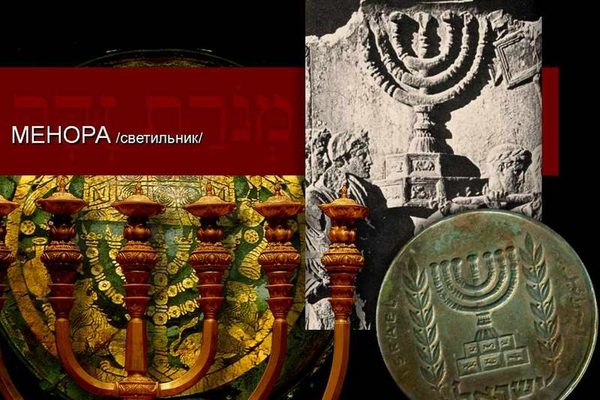
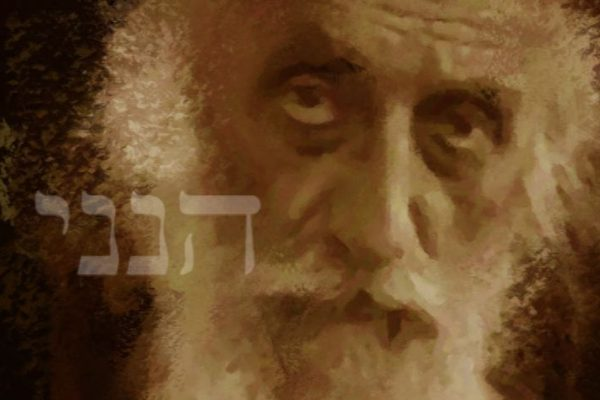
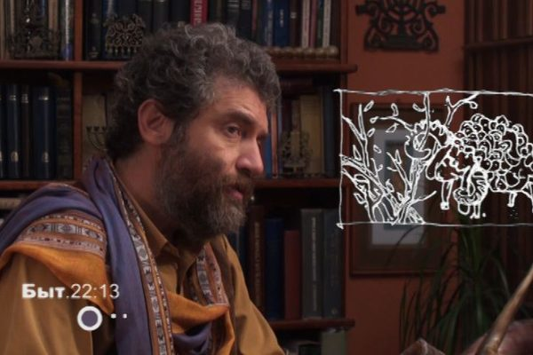
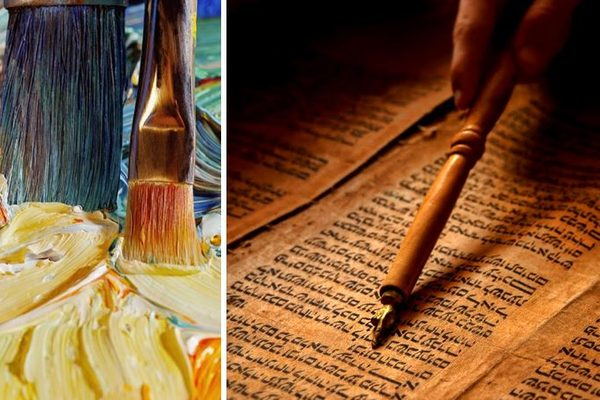
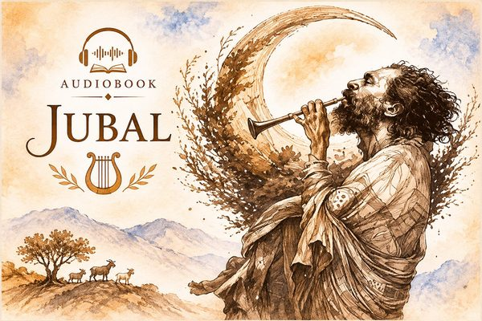
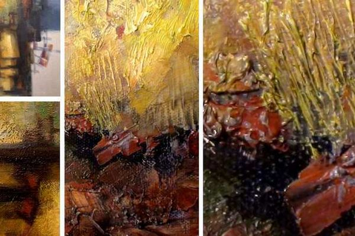
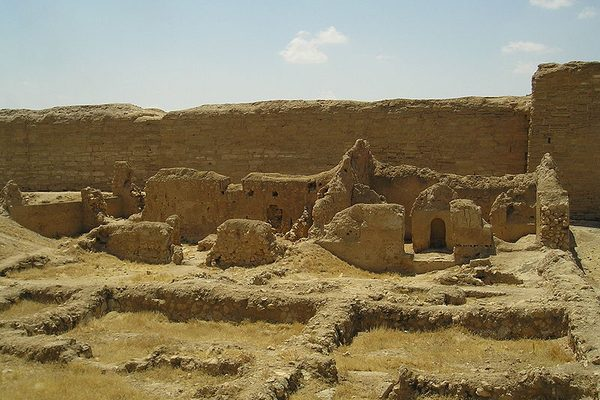
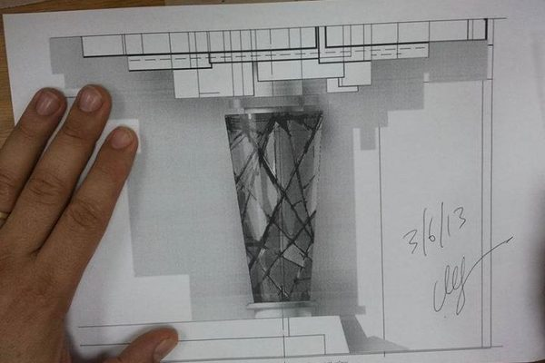

ВСЕ СТАТЬИ о художнике Бецалеле | Веселеил - Исх. 31:22018 · Арт-мидраш, Библия и художник
ВСЕ СТАТЬИ о художнике Бецалеле | Веселеил - Исх. 31:22018 · Арт-мидраш, Библия и художник Свет Господень. БЕЦАЛЕЛЬ / Веселеил /2015 · Арт-мидраш
Свет Господень. БЕЦАЛЕЛЬ / Веселеил /2015 · Арт-мидраш- БЕЦАЛЕЛЬ / Веселеил /. Под покровом Всевышнего2014 · Арт-мидраш, Библия и художник
- БЕЦАЛЕЛЬ / Веселеил /. Дед ХУР2014 · Арт-мидраш, Библия и художник
- Призван быть ОЧИЩЕННЫМ. Бецалель2016 · Арт-мидраш, Библия и художник
- БЕЦАЛЕЛЬ / Веселеил /. Прославляющий Бога2014 · Арт-мидраш, Библия и художник
 БЕЦАЛЕЛЬ - СЫН СВЕТА / полная версия /2018 · Арт-мидраш, Библия и художник
БЕЦАЛЕЛЬ - СЫН СВЕТА / полная версия /2018 · Арт-мидраш, Библия и художник Художник Бецалель. Сердце учителя2014 · Арт-мидраш, Библия и художник
Художник Бецалель. Сердце учителя2014 · Арт-мидраш, Библия и художник Прямое ПОПАДАНИЕ В ЦЕЛЬ2014 · Арт-мидраш, Библия и художник
Прямое ПОПАДАНИЕ В ЦЕЛЬ2014 · Арт-мидраш, Библия и художник Школа Бецалеля. РОДИТЕЛЬ2014 · Арт-мидраш
Школа Бецалеля. РОДИТЕЛЬ2014 · Арт-мидраш Школа Бецалеля. ПРИЗВАНИЕ УЧИТЬ2014 · Арт-мидраш, Библия и художник
Школа Бецалеля. ПРИЗВАНИЕ УЧИТЬ2014 · Арт-мидраш, Библия и художник
МЕНОРА - СИМВОЛ ШКОЛЫ Бецалеля2014 · Арт-мидраш Святилише - МИШКАН и МИКДАШ2014 · Арт-мидраш
Святилише - МИШКАН и МИКДАШ2014 · Арт-мидраш БЫЛИ РУКИ ЕГО - ВЕРА /Исх.17:12/2014 · Язык Библии, Арт-мидраш, Библия и художник
БЫЛИ РУКИ ЕГО - ВЕРА /Исх.17:12/2014 · Язык Библии, Арт-мидраш, Библия и художник ШАВУОТ - Праздник ДАРОВАНИЯ СВОБОДЫ2018 · Арт-мидраш, Праздники Господни
ШАВУОТ - Праздник ДАРОВАНИЯ СВОБОДЫ2018 · Арт-мидраш, Праздники Господни
 ГОЛОС ШОФАРА ч.1. Высокое предназначение2014 · Арт-мидраш, Праздники Господни
ГОЛОС ШОФАРА ч.1. Высокое предназначение2014 · Арт-мидраш, Праздники Господни
ГОЛОС ШОФАРА ч.2. Призвание2014 · Арт-мидраш, Праздники Господни Воспоминание ТРУБЛЕНИЯ ШОФАРА2014 · Арт-мидраш, Праздники Господни
Воспоминание ТРУБЛЕНИЯ ШОФАРА2014 · Арт-мидраш, Праздники Господни ГОЛОС ШОФАРА ч.4. ЮБИЛЕЙ2014 · Арт-мидраш, Праздники Господни
ГОЛОС ШОФАРА ч.4. ЮБИЛЕЙ2014 · Арт-мидраш, Праздники Господни
ГОЛОС ШОФАРА ч.52014 · Арт-мидраш, Праздники Господни Звуки шофара. ТРЕПЕТ И ПРОРОЧЕСТВО2015 · Арт-мидраш, Праздники Господни
Звуки шофара. ТРЕПЕТ И ПРОРОЧЕСТВО2015 · Арт-мидраш, Праздники Господни Звуки шофара. ШВАРИМ. Йом Кипур2016 · Арт-мидраш, Праздники Господни
Звуки шофара. ШВАРИМ. Йом Кипур2016 · Арт-мидраш, Праздники Господни Шофар - единственный в своем роде!2015 · Арт-мидраш, Праздники Господни
Шофар - единственный в своем роде!2015 · Арт-мидраш, Праздники Господни ТРУБЛЕНИЕ ШОФАРА. Исполнение заповеди2015 · Арт-мидраш, Праздники Господни
ТРУБЛЕНИЕ ШОФАРА. Исполнение заповеди2015 · Арт-мидраш, Праздники Господни
 ЮВАЛЬ - Отец играющих на арфе и свирели2019 · Библия и художник, Арт-мидраш
ЮВАЛЬ - Отец играющих на арфе и свирели2019 · Библия и художник, Арт-мидраш ОТЕЦ играющих на гуслях. САМОЕ НАЧАЛО. ИУВАЛ2014 · Арт-мидраш
ОТЕЦ играющих на гуслях. САМОЕ НАЧАЛО. ИУВАЛ2014 · Арт-мидраш Эфраим Калиш. «МУЗЫКАНТ. Йуваль, сын Лемеха»2024 · Книги и арт-проекты, Арт-мидраш
Эфраим Калиш. «МУЗЫКАНТ. Йуваль, сын Лемеха»2024 · Книги и арт-проекты, Арт-мидраш- ГОЛОС ШОФАРА ч.4. ЮБИЛЕЙ2014 · Арт-мидраш, Праздники Господни
- ГОЛОС ШОФАРА ч.1. Высокое предназначение2014 · Арт-мидраш, Праздники Господни
 МУЗЫКА и ТОРА2014 · Арт-мидраш
МУЗЫКА и ТОРА2014 · Арт-мидраш
ТОРА и ЯЗЫК МУЗЫКИ2014 · Арт-мидраш
 Эфраим Калиш. Книги о творчестве в Библии2023 · Книги и арт-проекты, Арт-мидраш, Библия и художник
Эфраим Калиш. Книги о творчестве в Библии2023 · Книги и арт-проекты, Арт-мидраш, Библия и художник- Эфраим Калиш. «МУЗЫКАНТ. Йуваль, сын Лемеха»2024 · Книги и арт-проекты, Арт-мидраш

МУЗЫКАНТ. Йуваль, сын Лемеха. Аудиокнига2024 · Книги и арт-проекты, Арт-мидраш- БЕЦАЛЕЛЬ - СЫН СВЕТА / полная версия /2018 · Арт-мидраш, Библия и художник
 СЛЫШАТЬ ГОЛОС ШОФАРА2015 · Библия и художник, Арт-мидраш, Праздники Господни
СЛЫШАТЬ ГОЛОС ШОФАРА2015 · Библия и художник, Арт-мидраш, Праздники Господни- ГОЛОС ШОФАРА ч.1. Высокое предназначение2014 · Арт-мидраш, Праздники Господни
- ГОЛОС ШОФАРА ч.2. Призвание2014 · Арт-мидраш, Праздники Господни
- Воспоминание ТРУБЛЕНИЯ ШОФАРА2014 · Арт-мидраш, Праздники Господни
- ГОЛОС ШОФАРА ч.4. ЮБИЛЕЙ2014 · Арт-мидраш, Праздники Господни
- ГОЛОС ШОФАРА ч.52014 · Арт-мидраш, Праздники Господни
- ШАВУОТ - Праздник ДАРОВАНИЯ СВОБОДЫ2018 · Арт-мидраш, Праздники Господни
- БЫЛИ РУКИ ЕГО - ВЕРА /Исх.17:12/2014 · Язык Библии, Арт-мидраш, Библия и художник
- Призван быть ОЧИЩЕННЫМ. Бецалель2016 · Арт-мидраш, Библия и художник
- Свет Господень. БЕЦАЛЕЛЬ / Веселеил /2015 · Арт-мидраш
- Школа Бецалеля. ПРИЗВАНИЕ УЧИТЬ2014 · Арт-мидраш, Библия и художник
- Школа Бецалеля. РОДИТЕЛЬ2014 · Арт-мидраш
- Прямое ПОПАДАНИЕ В ЦЕЛЬ2014 · Арт-мидраш, Библия и художник
- ГОЛОС ШОФАРА ч.1. Высокое предназначение2014 · Арт-мидраш, Праздники Господни
- ГОЛОС ШОФАРА ч.2. Призвание2014 · Арт-мидраш, Праздники Господни

ПОНИМАТЬ язык Библии. ЗРИ В КОРЕНЬ2015 · Язык Библии, Арт-мидраш

- ПОНИМАТЬ язык Библии. ЗРИ В КОРЕНЬ2015 · Язык Библии, Арт-мидраш
 РАЗНЫЕ ПОНИМАНИЯ2014 · Язык Библии, Арт-мидраш
РАЗНЫЕ ПОНИМАНИЯ2014 · Язык Библии, Арт-мидраш- БЫЛИ РУКИ ЕГО - ВЕРА /Исх.17:12/2014 · Язык Библии, Арт-мидраш, Библия и художник
- Прямое ПОПАДАНИЕ В ЦЕЛЬ2014 · Арт-мидраш, Библия и художник
- Художник Бецалель. Сердце учителя2014 · Арт-мидраш, Библия и художник
- Школа Бецалеля. РОДИТЕЛЬ2014 · Арт-мидраш
- БЕЦАЛЕЛЬ / Веселеил /. Под покровом Всевышнего2014 · Арт-мидраш, Библия и художник
- Святилише - МИШКАН и МИКДАШ2014 · Арт-мидраш
 ДОМ ИЗ СЛОВ: 10 ФАКТОВ ОБ ОДНОЙ СИНАГОГЕ2019 · Арт-мидраш, Библия и художник
ДОМ ИЗ СЛОВ: 10 ФАКТОВ ОБ ОДНОЙ СИНАГОГЕ2019 · Арт-мидраш, Библия и художник Куща ДАНИЭЛЯ ЛИБЕСКИНДА. Праздник СУККОТ2015 · Арт-мидраш, Праздники Господни, Артефакты, Путешествия
Куща ДАНИЭЛЯ ЛИБЕСКИНДА. Праздник СУККОТ2015 · Арт-мидраш, Праздники Господни, Артефакты, Путешествия ПРАЗДНИК СУККОТ. МЕЧТА семьи Деллер2015 · Арт-мидраш, Праздники Господни
ПРАЗДНИК СУККОТ. МЕЧТА семьи Деллер2015 · Арт-мидраш, Праздники Господни Знай ПРЕД КЕМ ты стоишь! СТОЛП ОГНЕННЫЙ2016 · Арт-мидраш, Артефакты, Галереи, Библия и художник, Праздники Господни
Знай ПРЕД КЕМ ты стоишь! СТОЛП ОГНЕННЫЙ2016 · Арт-мидраш, Артефакты, Галереи, Библия и художник, Праздники Господни- Святилише - МИШКАН и МИКДАШ2014 · Арт-мидраш

Фреска как мидраш2018 · Арт-мидраш, Путешествия


 Приди ВЕТЕР с Севера ! П.Песн. 4:162018 · Арт-мидраш, Библия и художник
Приди ВЕТЕР с Севера ! П.Песн. 4:162018 · Арт-мидраш, Библия и художник Вопросы "Ноя"...2016 · Арт-мидраш, Библия и художник
Вопросы "Ноя"...2016 · Арт-мидраш, Библия и художник ОТПУСТИ МОЙ НАРОД! Праздник Песах. Исход2014 · Арт-мидраш, Праздники Господни
ОТПУСТИ МОЙ НАРОД! Праздник Песах. Исход2014 · Арт-мидраш, Праздники Господни- БЕЦАЛЕЛЬ / Веселеил /. Призвание2014 · Арт-мидраш, Библия и художник

Авангардный АРТ-ДИЗАЙН СИНАГОГИ2014 · Арт-мидраш, Артефакты